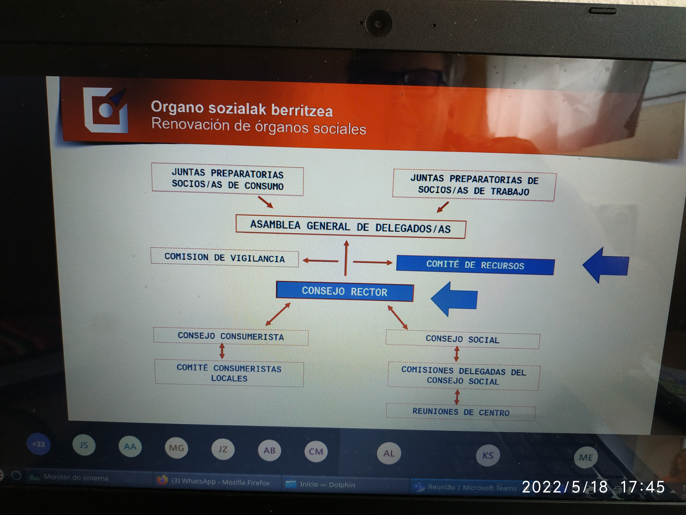
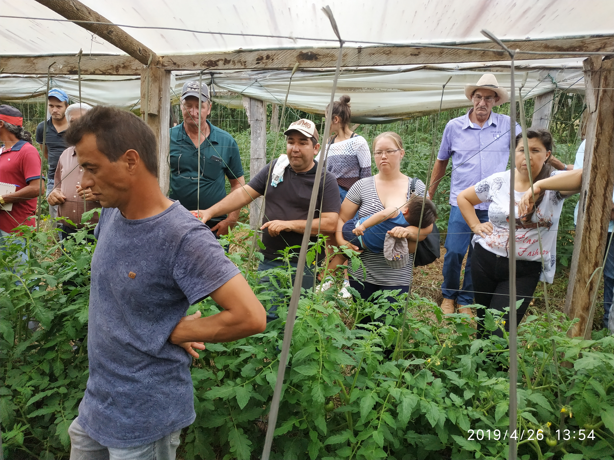
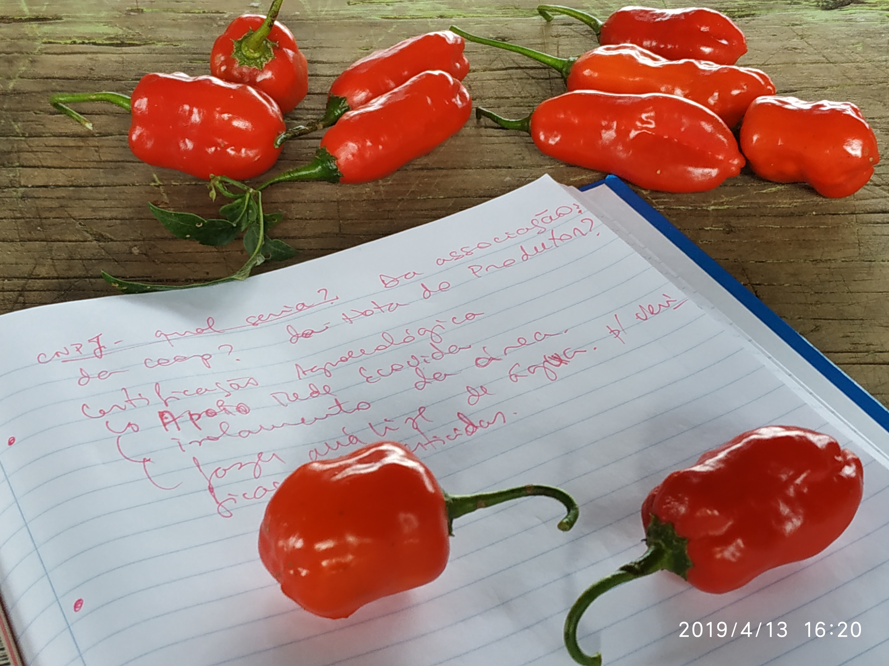
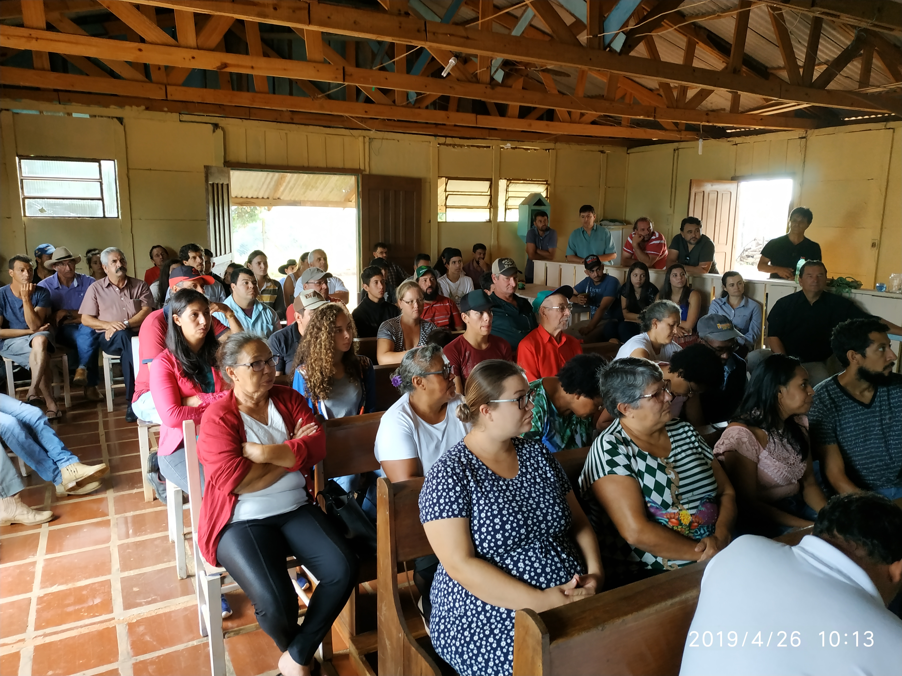
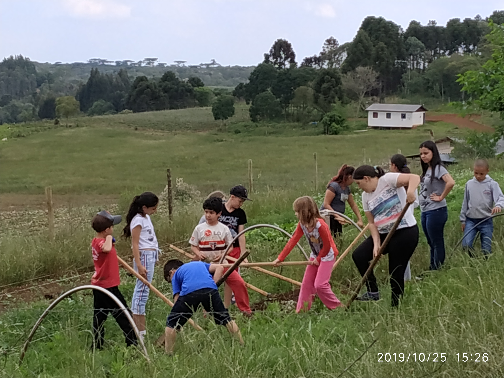
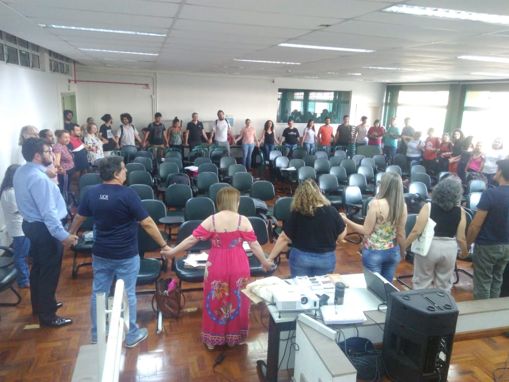

Cooperativismo e Economia Solidária
Cooperativismo, organizações econômicas coletivas, economia solidária e autogestão.
Conhecer →Núcleo de Estudos em Cooperação · UFFS
O NECOOP desenvolve pesquisa, extensão e formação em torno da cooperação, do cooperativismo, da agroecologia, da reforma agrária e das formas coletivas de organização econômica e social.


Pesquisa · Extensão · Formação
O NECOOP atua na interface entre universidade, organizações sociais, cooperativas, escolas e comunidades. Seu trabalho parte de situações concretas e busca produzir conhecimento útil para compreender e transformar realidades.
A pesquisa acadêmica, os processos educativos e a atuação territorial são entendidos como dimensões articuladas de uma mesma prática de construção coletiva.
Conheça o modo de atuação do NECOOP →Onde atuamos
Diferentes temas convergem no trabalho do Núcleo a partir da cooperação, da organização coletiva e da transformação social.

Cooperativismo, organizações econômicas coletivas, economia solidária e autogestão.
Conhecer →
Pesquisa, extensão e formação voltadas aos processos de transição agroecológica.
Conhecer →
Assentamentos, organizações sociais e processos econômicos e produtivos da Reforma Agrária.
Conhecer →
Processos educativos, metodologias, materiais pedagógicos e experiências de formação.
Conhecer →Experiências concretas
O conhecimento produzido pelo NECOOP está ligado a projetos, organizações e processos desenvolvidos em situações concretas.

Território · Organização · Produção
Projetos de pesquisa e extensão aproximam universidade, organizações sociais e experiências concretas de produção, cooperação e organização econômica.
Conhecer os projetos →Metodologias
O Núcleo utiliza e desenvolve métodos e instrumentos para processos participativos, educativos e de investigação.
Conhecer metodologias →Acervo e conhecimento
Publicações, materiais educativos e leituras selecionadas formam um acervo aberto para pesquisa, ensino e formação.
Artigos, livros, capítulos e outras produções científicas e técnicas de pesquisadores e integrantes do NECOOP.
Ver publicações →Estudos de caso, relatos de prática e materiais de referência reunidos pelo Núcleo.
Acessar biblioteca →Guias, jogos e materiais destinados a educadores, escolas, comunidades e processos de formação.
Ver recursos →Projetos, atividades, publicações e experiências serão incorporados progressivamente ao site. Acompanhe também as notícias e atualizações do Núcleo.